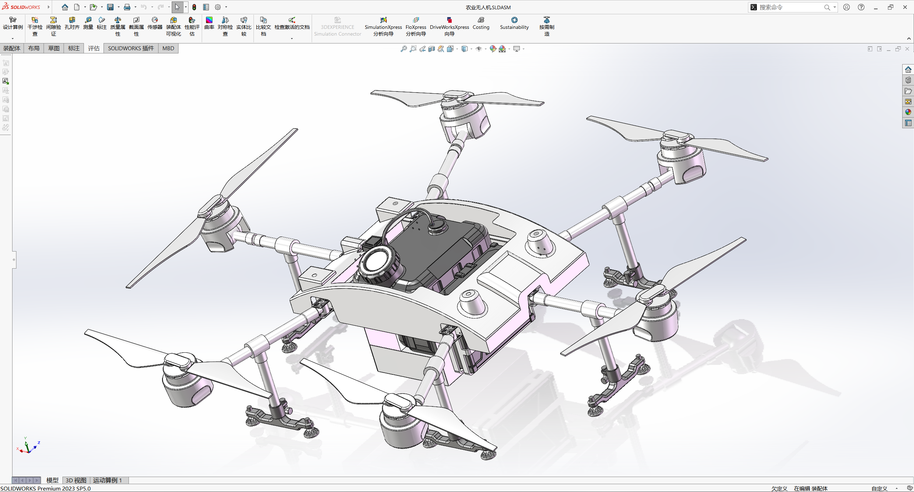
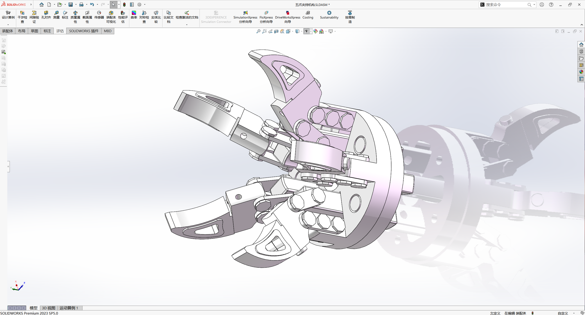
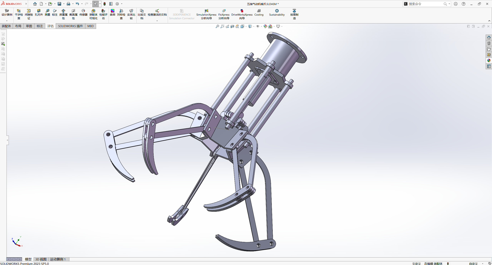

INDEX / SELECTED WORKS
作品目录.
从动力结构到末端执行器。
点击任一作品，进入独立详情页。

动力与传动 / ASSEMBLY
V6 发动机
凸轮轴、链传动与排气歧管的装配呈现
BOOKMARK / 02
机器人机构 / MECHANISM
多自由度机械手
基座、关节、连杆与末端夹爪的整体布置
BOOKMARK / 03
整机布局 / ASSEMBLY
农业无人机
机体、旋翼、机臂与起落结构的组合
BOOKMARK / 04
末端执行器 / MECHANISM
五爪夹持机构
多爪夹持布局、铰接与支撑结构
BOOKMARK / 05
气动机构 / MECHANISM
五指气动机械爪
驱动结构、连杆与指爪的整体构型
END OF INDEX / 05← 返回封面